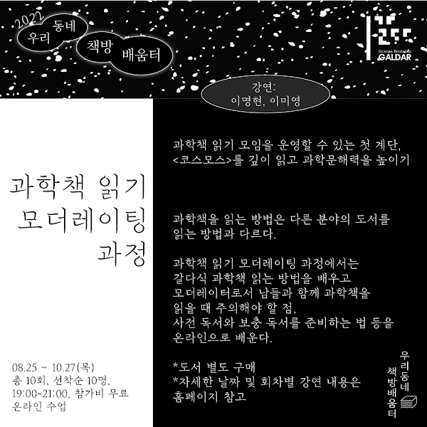

GALDAR CLUB
갈다와 함께 읽고, 탐구하고, 여행하는 프로그램을 만나보세요.
전체 389개의 기록

갈다탐사클럽 : 개미편
원문 보기
<<취소되었습니다>> 북토크 『DNA는 어떻게 나를 설계하는가?』저자와의 만남
원문 보기
북토크 『우주론, 100년』- 역자 황호성
원문 보기![[갈다x서울시립과학관] 서울시립과학관 다시 걷기 월 공유회 #2 포스터](assets/past-club-6296381.jpg)
[갈다x서울시립과학관] 서울시립과학관 다시 걷기 월 공유회 #2
원문 보기![[갈다x서울형책방] 삼청동 드로잉 클럽: 식물 포스터](assets/past-club-6295281.jpg)
[갈다x서울형책방] 삼청동 드로잉 클럽: 식물
원문 보기![[갈다x서울형책방] 삼청동 모닝 클럽: 새 포스터](assets/past-club-6295072.jpg)
[갈다x서울형책방] 삼청동 모닝 클럽: 새
원문 보기![[갈다x서울시립과학관] 서울시립과학관 새롭게 읽기 월 공유회 #1 포스터](assets/past-club-6252570.jpg)
[갈다x서울시립과학관] 서울시립과학관 새롭게 읽기 월 공유회 #1
원문 보기![[갈다x서울형책방] 삼청동 나이트 클럽 포스터](assets/past-club-6184071.jpg)
[갈다x서울형책방] 삼청동 나이트 클럽
원문 보기![[과학예술워크숍] 신기한 생태도감 포스터](assets/past-club-6181512.jpg)
[과학예술워크숍] 신기한 생태도감
원문 보기
재난·안전 관련 사회문제를 해결하는 과학기술 이야기
원문 보기
재난·안전 관련 사회문제를 해결하는 과학기술 이야기
원문 보기
<마감> 고흥군 우도 에코 캠핑
원문 보기
북토크 『완벽한 때는 오지 않는다』
원문 보기
북토크 『안녕, 바나나』- 불안과 디스토피아
원문 보기
2026 갈다와 함께 떠나는 캐나다 오로라여행
상세 보기
북토크 『이상한 몸 박물관』,『수상한 몸 공장』
원문 보기
북&송토크 『우리를 찾아줘』
원문 보기
과학책읽기 모더레이터 101 (2기)
원문 보기![[갈다클럽] 갈다 신간 읽기 클럽 포스터](assets/past-club-5792965.jpg)
[갈다클럽] 갈다 신간 읽기 클럽
원문 보기![[갈다클럽] 이명현과 함께 읽는 『코스모스』 포스터](assets/cosmos-5793083.jpg)
[갈다클럽] 이명현과 함께 읽는 『코스모스』
원문 보기
북토크 『지구 관찰자의 기후 노트』- 저자와의 만남
원문 보기![[2025SMF] 양자역학 1925-2025, 삼청 사이언스 구락부 포스터](assets/past-club-5757456.jpg)
[2025SMF] 양자역학 1925-2025, 삼청 사이언스 구락부
원문 보기
북토크 『미생물로 쓴 소설들』- 저자와의 만남
원문 보기![[갈다x서울형책방] 궁궐 나무 탐험가 포스터](assets/past-club-5690900.jpg)
[갈다x서울형책방] 궁궐 나무 탐험가
원문 보기
북토크 『궁궐의 우리 나무』저자와의 만남
원문 보기![[갈다클럽] 삼청 사이언스 클럽-양자역학 100주년 포스터](assets/past-club-5616850.jpg)
[갈다클럽] 삼청 사이언스 클럽-양자역학 100주년
원문 보기![[갈다클럽] 갈다 신간 읽기 클럽 포스터](assets/past-club-5616096.jpg)
[갈다클럽] 갈다 신간 읽기 클럽
원문 보기![[갈다클럽] 갈다심야책방 포스터](assets/past-club-5556733.jpg)
[갈다클럽] 갈다심야책방
원문 보기![[과학예술워크숍] 날씨의 마음 포스터](assets/past-club-5422138.jpg)
[과학예술워크숍] 날씨의 마음
원문 보기
북토크 『외우지 않아도 괜찮아 지구과학』저자와의 만남
원문 보기![[갈다클럽] 갈다 신간 읽기 클럽 포스터](assets/past-club-5334693.jpg)
[갈다클럽] 갈다 신간 읽기 클럽
원문 보기![[갈다북클럽] 강양구: 과학이 우리에 대해 알려준 최상 혹은 최악의 사실들 포스터](assets/past-club-5285934.jpg)
[갈다북클럽] 강양구: 과학이 우리에 대해 알려준 최상 혹은 최악의 사실들
원문 보기![[갈다클럽] 디지털 마인드맵 워크숍 포스터](assets/past-club-5277064.jpg)
[갈다클럽] 디지털 마인드맵 워크숍
원문 보기
과학 방탈출-우주탐험
원문 보기
북토크 『진료실 자본론』- 저자와의 만남
원문 보기![[갈다 탐사 클럽] 2월:윈터윙즈 포스터](assets/past-club-5185759.jpg)
[갈다 탐사 클럽] 2월:윈터윙즈
원문 보기![[갈다 탐사 클럽] 3월:양서류탐사 포스터](assets/past-club-5185512.jpg)
[갈다 탐사 클럽] 3월:양서류탐사
원문 보기![[갈다가벼운북클럽] 미래는 우연한가: 과학, 혁신과 전략 포스터](assets/past-club-5173339.jpg)
[갈다가벼운북클럽] 미래는 우연한가: 과학, 혁신과 전략
원문 보기![[갈다가벼운북클럽] 당신을 위한 다정한 뇌과학 포스터](assets/past-club-5173338.jpg)
[갈다가벼운북클럽] 당신을 위한 다정한 뇌과학
원문 보기![[갈다가벼운북클럽] 사랑했던, 사랑하는, 사랑 하고싶은 모든 사람들을 위하여 포스터](assets/past-club-5173337.jpg)
[갈다가벼운북클럽] 사랑했던, 사랑하는, 사랑 하고싶은 모든 사람들을 위하여
원문 보기![[갈다클럽] 갈다 청소년 과학 북클럽 포스터](assets/past-club-5172986.jpg)
[갈다클럽] 갈다 청소년 과학 북클럽
원문 보기![[갈다클럽] 갈다 신간 읽기 클럽 포스터](assets/past-club-5172970.jpg)
[갈다클럽] 갈다 신간 읽기 클럽
원문 보기![[갈다클럽] 이명현과 함께 읽는 『코스모스』 포스터](assets/cosmos-5172984.jpg)
[갈다클럽] 이명현과 함께 읽는 『코스모스』
원문 보기
북토크 『실험실로 간 세포』- 저자와의 만남
원문 보기![[과커스쿨] 갈다와 과학문화콘텐츠 기획하기 - 전시기획 편 포스터](assets/scicomm-school-5156258.jpg)
[과커스쿨] 갈다와 과학문화콘텐츠 기획하기 - 전시기획 편
원문 보기![[과커스쿨] 하리하라와 함께 하는 과학책 쓰기(2기) 포스터](assets/scicomm-school-5156253.jpg)
[과커스쿨] 하리하라와 함께 하는 과학책 쓰기(2기)
원문 보기![[과커스쿨] SF작가 김창규와 장르단편소설 쓰기(2기) 포스터](assets/scicomm-school-5156239.jpg)
[과커스쿨] SF작가 김창규와 장르단편소설 쓰기(2기)
원문 보기![[과커스쿨] 과학강연자를 위한 스피치 특강 포스터](assets/scicomm-school-5156229.jpg)
[과커스쿨] 과학강연자를 위한 스피치 특강
원문 보기![[과커스쿨] 보이는 것과 보이지 않는 것, 강연 콘텐츠와 커뮤니케이션 포스터](assets/scicomm-school-5156208.jpg)
[과커스쿨] 보이는 것과 보이지 않는 것, 강연 콘텐츠와 커뮤니케이션
원문 보기![[과커스쿨] 똥손 과학 일러스트 카드뉴스 만들기 포스터](assets/scicomm-school-5156188.jpg)
[과커스쿨] 똥손 과학 일러스트 카드뉴스 만들기
원문 보기
갈다 신간 읽기 클럽 · 시즌9 (2026)
상세 보기![[신청마감] 갈다와 함께 떠나는 캐나다 오로라여행 포스터](assets/past-club-5071106.jpg)
[신청마감] 갈다와 함께 떠나는 캐나다 오로라여행
상세 보기
<취소> 북토크 『2025 미래 과학 트렌드』- 저자와의 만남
원문 보기
2024 GALDAR SCIENCE MEDIA FESTIVAL
원문 보기![[갈다클럽] 갈다 신간 읽기 클럽 포스터](assets/past-club-4984216.jpg)
[갈다클럽] 갈다 신간 읽기 클럽
원문 보기![[갈다x사유원] 과학인생학교 리트릿캠프 2024 포스터](assets/past-club-4971298.jpg)
[갈다x사유원] 과학인생학교 리트릿캠프 2024
원문 보기![[과커스쿨] 갈다 과학 커뮤니케이션 캠프 (해커톤) 포스터](assets/scicomm-school-4939650.jpg)
[과커스쿨] 갈다 과학 커뮤니케이션 캠프 (해커톤)
원문 보기![[갈다가벼운북클럽] 미술관에 간 과학자들 포스터](assets/past-club-4915680.jpg)
[갈다가벼운북클럽] 미술관에 간 과학자들
원문 보기![[갈다가벼운북클럽] 일상으로 수학하기 포스터](assets/past-club-4915679.jpg)
[갈다가벼운북클럽] 일상으로 수학하기
원문 보기![[갈다북클럽] 강양구- AI시대, 창의성은 어떻게 탄생할까? 포스터](assets/past-club-4915678.jpg)
[갈다북클럽] 강양구- AI시대, 창의성은 어떻게 탄생할까?
원문 보기![[갈다클럽] 이미영의 갈다드로잉클럽 포스터](assets/past-club-4915671.jpg)
[갈다클럽] 이미영의 갈다드로잉클럽
원문 보기![[갈다클럽] 박상준의 갈다SF클럽 포스터](assets/past-club-4913186.jpg)
[갈다클럽] 박상준의 갈다SF클럽
원문 보기
갈다X과학 커뮤니케이터 프로젝트 <오늘 과학 한끼 어때요?>
원문 보기
북토크 『조금씩 몸을 바꾸며 살아갑니다』- 저자 하리하라와의 만남
원문 보기![[과커스쿨] 과학 비전공 콘텐츠 제작자를 위한 통합과학 포스터](assets/scicomm-school-4838175.jpg)
[과커스쿨] 과학 비전공 콘텐츠 제작자를 위한 통합과학
원문 보기![[과커스쿨] 과학 강연자를 위한 스킬업 레슨 포스터](assets/scicomm-school-4837187.jpg)
[과커스쿨] 과학 강연자를 위한 스킬업 레슨
원문 보기![[과커스쿨] 과학책 읽고 말하고 글쓰기 포스터](assets/scicomm-school-4836841.jpg)
[과커스쿨] 과학책 읽고 말하고 글쓰기
원문 보기![[과커스쿨] 갈다와 과학문화콘텐츠 기획하기 포스터](assets/scicomm-school-4836764.jpg)
[과커스쿨] 갈다와 과학문화콘텐츠 기획하기
원문 보기![[과커스쿨] SF작가 김창규와 장르단편소설 쓰기 포스터](assets/scicomm-school-4836756.jpg)
[과커스쿨] SF작가 김창규와 장르단편소설 쓰기
원문 보기
과학 방탈출 <AI시대의 문명>
원문 보기
<마감> 북토크 『날마다 우주 한 조각』- 저자 지웅배와의 만남
원문 보기
갈다와 SF영화 읽기
원문 보기![[갈다클럽α] 과학예술워크숍 <날씨의 마음> 포스터](assets/past-club-4688188.jpg)
[갈다클럽α] 과학예술워크숍 <날씨의 마음>
원문 보기![[과커스쿨] 갈다와 과학문화콘텐츠 기획하기 포스터](assets/scicomm-school-4645358.jpg)
[과커스쿨] 갈다와 과학문화콘텐츠 기획하기
원문 보기![[과커스쿨] 태피디와 과학영상 만들기 포스터](assets/scicomm-school-4643937.jpg)
[과커스쿨] 태피디와 과학영상 만들기
원문 보기![[과커스쿨] SF작가 김창규와 장르단편소설 쓰기 포스터](assets/scicomm-school-4643936.jpg)
[과커스쿨] SF작가 김창규와 장르단편소설 쓰기
원문 보기![[과커스쿨] 하리하라 이은희와 과학책 쓰기 포스터](assets/scicomm-school-4643613.jpg)
[과커스쿨] 하리하라 이은희와 과학책 쓰기
원문 보기![[과커스쿨] 도서평론가 이권우와 과학 글쓰기 포스터](assets/scicomm-school-4643608.jpg)
[과커스쿨] 도서평론가 이권우와 과학 글쓰기
원문 보기
과학책읽기 모더레이터 101
원문 보기![[마감] 북토크 『청혼』- 저자 배명훈과의 만남 포스터](assets/booktalk-4633716.jpg)
[마감] 북토크 『청혼』- 저자 배명훈과의 만남
원문 보기
북토크 『은하의 모든 순간』- 저자 안홍배와의 만남
원문 보기![[갈다북클럽β] 최진영- 건강하고 행복한 우리의 노년-과학에서 답을 찾다 포스터](assets/past-club-4618137.jpg)
[갈다북클럽β] 최진영- 건강하고 행복한 우리의 노년-과학에서 답을 찾다
원문 보기![[갈다클럽α] 삼청 사이언스 클럽-탐험가의 스케치북 포스터](assets/past-club-4618108.jpg)
[갈다클럽α] 삼청 사이언스 클럽-탐험가의 스케치북
원문 보기
갈다X과학 커뮤니케이터 프로젝트 <떠먹여주는 과학>
원문 보기
과학인생학교Σ 2기
원문 보기![[갈다북클럽β] 강양구 - 감정의 과학 포스터](assets/past-club-4599266.jpg)
[갈다북클럽β] 강양구 - 감정의 과학
원문 보기![[갈다클럽α] 갈다 신간 읽기 클럽 포스터](assets/past-club-4599228.jpg)
[갈다클럽α] 갈다 신간 읽기 클럽
원문 보기![[갈다클럽α] 이명현과 함께 읽는 『코스모스』 포스터](assets/cosmos-4599253.jpg)
[갈다클럽α] 이명현과 함께 읽는 『코스모스』
원문 보기
북토크 『어쩌면 당신이 원했던 과학 이야기』- 저자와의 만남
원문 보기
북토크 『패턴 시커』- 역자 강연
원문 보기
북토크 『한글과 타자기』 - 저자와의 만남
원문 보기
북토크 『기계 속의 유령』- 저자와의 만남
원문 보기![[마감] 북토크 『코스미그래픽』- 지웅배(우주먼지)와 함께하는 우주 도슨트 여행 포스터](assets/booktalk-4514380.jpg)
[마감] 북토크 『코스미그래픽』- 지웅배(우주먼지)와 함께하는 우주 도슨트 여행
원문 보기
2024 시즌4🎆갈다클럽나잇
원문 보기
북토크 『태양을 만드는 사람들』- 저자 나용수 x 나경수 박사와의 만남
원문 보기
북토크 『화석이 말하는 것들』- 저자와의 만남
원문 보기
북토크&독서모임 『2024 미래 과학 트렌드』저자와의 만남
원문 보기
북토크 『오늘은 소행성』저자와의 만남
원문 보기
북토크 『여인형의 화학 공부』저자와의 만남
원문 보기
북토크 『인류세, 엑소더스』남종영 작가x황진태 교수와의 만남
원문 보기
과학책방 갈다와 함께 하는 2024 캐나다 오로라 & 개기일식 여행
상세 보기
과학인생학교Σ 1기
원문 보기![[갈다클럽α] 갈다 신간 읽기 클럽 포스터](assets/past-club-4334602.jpg)
[갈다클럽α] 갈다 신간 읽기 클럽
원문 보기![[갈다클럽α] 삼청 사이언스 클럽-오로라& 개기일식 포스터](assets/past-club-4334597.jpg)
[갈다클럽α] 삼청 사이언스 클럽-오로라& 개기일식
원문 보기![[갈다클럽α] 청소년을 위한 과학예술워크숍-달달한 그래픽노블:우주편 포스터](assets/past-club-4334596.jpg)
[갈다클럽α] 청소년을 위한 과학예술워크숍-달달한 그래픽노블:우주편
원문 보기![[갈다클럽α] 어린이를 위한 과학예술워크숍-알쓸만화 포스터](assets/past-club-4334595.jpg)
[갈다클럽α] 어린이를 위한 과학예술워크숍-알쓸만화
원문 보기![[갈다북클럽β] 이은희- 몸- 기원, 현재 그리고 미래 포스터](assets/past-club-4334432.jpg)
[갈다북클럽β] 이은희- 몸- 기원, 현재 그리고 미래
원문 보기![[갈다북클럽β] 최진영-이해할 수 없는 것들을 이해하기 위하여 포스터](assets/past-club-4334424.jpg)
[갈다북클럽β] 최진영-이해할 수 없는 것들을 이해하기 위하여
원문 보기![[갈다북클럽β] 해도연-자연의 역사 포스터](assets/past-club-4334348.jpg)
[갈다북클럽β] 해도연-자연의 역사
원문 보기![[갈다북클럽β] 이권우-과학이라는 대륙에 흥미롭고 유쾌하게 상륙하는 법 포스터](assets/past-club-4334278.jpg)
[갈다북클럽β] 이권우-과학이라는 대륙에 흥미롭고 유쾌하게 상륙하는 법
원문 보기![[갈다북클럽β] 강양구-인공지능(AI) 시대, 수상한 질문들 포스터](assets/past-club-4334018.jpg)
[갈다북클럽β] 강양구-인공지능(AI) 시대, 수상한 질문들
원문 보기
<환갑삼이, 살아보니> 북콘서트 & 파티 참가 티켓
원문 보기
북토크 『김범준의 이것저것의 물리학』- 저자와의 만남
원문 보기
북토크 『나의 시간은 너의 시간과 같지 않다』- 저자 김찬주 교수와의 만남
원문 보기
북토크 『어디 인생이 원하는 대로 흘러가던가요』- 저자와의 만남
원문 보기
북토크 『빅데이터 시대, 잘 먹고 잘 사는 현대인의 필수 교양 정보 문해력』- 역자 박영민 박사와의 만남
원문 보기
북토크 『조선이 만난 아인슈타인』- 저자 민태기 작가 x 이명현 대표와의 만남
원문 보기![[2023 시즌3] 갈다클럽나잇, 첫 번째 시간 포스터](assets/past-club-4186607.jpg)
[2023 시즌3] 갈다클럽나잇, 첫 번째 시간
원문 보기
청소년을 위한 과학 진로탐색 특강
원문 보기
어린이를 위한 우주+예술 워크숍
원문 보기
갈다 신간읽기 클럽
원문 보기
삼청 사이언스 클럽 - 과학영화편
원문 보기
칼 세이건 살롱 - 『에필로그』
원문 보기
북토크 『과학이 재미있어지는 질문과 토론』- 강다현 저자와의 만남
원문 보기
북토크 『물질의 재발견』- 한정훈, 박용섭, 최형준, 김기덕 저자와의 만남
원문 보기
2023 시즌2 갈다클럽나잇, 마지막 시간 - 플리마켓
원문 보기
북토크 『우주탐사 매뉴얼』- 저자 김성수 작가와의 만남
원문 보기
2023 시즌2 갈다클럽나잇, 첫 번째 시간
원문 보기![[ SF to You ] - SF소설로 엽서 만들기 포스터](assets/past-club-3986804.jpg)
[ SF to You ] - SF소설로 엽서 만들기
원문 보기
갈다 신간읽기 클럽 - 원데이
원문 보기
북토크 『곽재식과 힘의 용사들』- 저자 곽재식 작가와의 만남
원문 보기
갈다클럽 시즌2 BIG 3
원문 보기
북토크 『나는 죽을 때까지 재미있게 살고 싶다』- 저자 이근후 작가, 이명현 박사와의 만남
원문 보기
북토크 『진격의 물리학』- 저자 이광진 작가와의 만남
원문 보기
2023 갈다클럽 시즌2 - 대학생 서포터즈 모집
원문 보기
삼청 사이언스 클럽 - 인공지능편
원문 보기
갈다 신간읽기 클럽
원문 보기
어린이 과학책 탐험단
원문 보기
처음 읽는 과학책 - 생태편
원문 보기
칼 세이건 살롱 - 『잊혀진 조상의 그림자』
원문 보기
북토크 『유인원과의 산책』- 추천사를 쓴 강양구, 김혼비 작가와의 만남
원문 보기
북토크 『수상한 생선의 진짜로 해부하는 과학책』- 저자 김준연
원문 보기
2023 시즌1 갈다클럽나잇, 마지막 시간
원문 보기
북토크 『하늘과 바람과 별과 인간』- 저자 물리학자 김상욱
원문 보기
오월 오일 어린이날 이벤트 - 2.과학퀴즈탐험
원문 보기
북토크 『우주에서 기다릴게』- 대한민국 최초 우주인 이소연 박사
원문 보기
2023 시즌1 갈다클럽나잇, 두 번째 시간
원문 보기
『김상협의 무지개 연구』출간 기념 - 무지개 워크숍
원문 보기
2023 시즌1 갈다클럽나잇, 첫 번째 시간
원문 보기
섭식장애 인식주간 - 김율리 교수 ‘섭식장애 치료의 현재와 미래’ 강연
원문 보기
갈다클럽 서포터즈 모집
원문 보기
삼청공원 생태도감 어린이 제작단
원문 보기
어린이 과학책 탐험단
원문 보기
과학자읽기 클럽 - <찰스 다윈>
원문 보기
과학책 서평쓰기 클럽
원문 보기
삼청 사이언스 클럽
원문 보기
그림책으로 만나는 과학
원문 보기
갈다 신간읽기 클럽
원문 보기
환갑쓰리(3李) - 전국 환장투어 북토크
원문 보기
저자 북토크 『생명을 묻다』 분자생물학자 정우현
원문 보기
한국 SF 앤솔러지 『이토록 아름다운 세상에서』 저자 북토크
원문 보기
동네책방 과학 맛보기 북클럽
원문 보기
찰나의 MOMENTARY _ 춤과 음악의 즉흥공연
원문 보기
저자 북토크 『우주미션 이야기』 - 물리학자 황정아
원문 보기
저자 북토크 『인류세 쫌 아는 10대』 - 환경공학자 허정림
원문 보기
역자 북토크 『화석맨』 - 과학 칼럼니스트 윤신영
원문 보기
갈다의 SF 분석회
원문 보기
모두를 위한 세계시민교육 리터러시 (온라인)
원문 보기
과학문화민간협의회 포럼 제 2회 - 폴윤 교수
원문 보기
저자 북토크 『걱정 많은 어른들을 위한 화학 이야기』- 화학자 윤정인 박사
원문 보기
<미래과학기술과 함께하는 미래설계> 워크숍
원문 보기
『최준석의 과학열전』출간 기념 온라인 특강
원문 보기![[과학자 읽기]: 갈릴레오 (시간표 변경) 포스터](assets/past-club-3413167.jpg)
[과학자 읽기]: 갈릴레오 (시간표 변경)
원문 보기
SF 만화책 같이 읽기
원문 보기
삼청공원 생태도감 어린이 제작단
원문 보기
세티코리아와 함께하는 외계지적생명체 포럼
원문 보기
가상현실 창작도구 및 콘텐츠 놀이 체험 워크숍
원문 보기
미래과학기술로 재해석된 <페나키스토스코프> 장치만들기 워크숍
원문 보기
우주인 이소연 박사와 함께 하는 과학커뮤니케이션 포럼
원문 보기
북토크 저자 정인경 선생님과 함께하는 『내 생의 중력에 맞서』
원문 보기![[갈다 아카데미] 칼세이건 살롱 2022: 『악령이 출몰하는 세상』같이 읽기 포스터](assets/past-club-3297016.jpg)
[갈다 아카데미] 칼세이건 살롱 2022: 『악령이 출몰하는 세상』같이 읽기
원문 보기
북토크 『개의 마음을 읽는 법』- 반려동물 행동 전문 설채현 수의사
원문 보기
예술가/창작자를 위한 미래과학기술 세미나 <종이접기와 로봇공학>
원문 보기
저자 북토크 『역사가 묻고 화학이 답하다』 출간 기념
원문 보기
예술가/창작자를 위한 미래과학기술 세미나
원문 보기
2022 한걸음에 닿는 동네 배움터 프로그램
원문 보기
책방 풀무질과 함께하는 과학인문학 여행
원문 보기
옵시디언을 이용해 과학책 관계 연결하기
원문 보기
2022 과학책 읽기 모더레이팅 과정
원문 보기
2022 갈다의 별밤책술 리부트
원문 보기
2022 서울국제도서전 갈다 북토크
원문 보기
『물리의 정석 : 특수 상대성 이론과 고전 장론 편』 역자 이종필 교수 특강
원문 보기
북토크『햇빛도 때로는 독이다』- 박은정 교수
원문 보기
SF 『붉은 실 끝의 아이들』 신간 북토크
원문 보기
북토크 『치명적 동반자, 미생물』- 역자 강연
원문 보기
북토크 『겸손한 목격자들』
원문 보기![[북토크 ]『사X과X책』출간 기념, 두 저자의 북토크 포스터](assets/booktalk-2791932.jpg)
[북토크 ]『사X과X책』출간 기념, 두 저자의 북토크
원문 보기![[역자 강연] 박병철 이론물리학 박사 - 아인슈타인처럼 양자역학하기 포스터](assets/past-club-2780665.jpg)
[역자 강연] 박병철 이론물리학 박사 - 아인슈타인처럼 양자역학하기
원문 보기![[특별기획] 기본소득이 과학에게 묻다 포스터](assets/past-club-2780569.jpg)
[특별기획] 기본소득이 과학에게 묻다
원문 보기
2021 종로 책축제 <행성으로서의 지구, 종으로서의 인류> 특별강연
원문 보기[종로문화재단x과학책방 갈다] 과학책 읽기 모더레이팅 과정 [오프라인 수업 마감]
원문 보기
무료 북토크 『노화의 종말』
원문 보기
『우리의 태도가 과학적일 때』 무료 북토크
원문 보기![[갈다 아카데미] 『웰컴 투 더 유니버스』 같이 읽기 포스터](assets/past-club-2658686.jpg)
[갈다 아카데미] 『웰컴 투 더 유니버스』 같이 읽기
원문 보기![[우리동네 책방 배움터] 『생각한다면 과학자처럼』, 과학적 사고가 가장 경제적인 사고다! 포스터](assets/past-club-2636706.jpg)
[우리동네 책방 배움터] 『생각한다면 과학자처럼』, 과학적 사고가 가장 경제적인 사고다!
원문 보기
『창문을 열면, 우주』 북토크
원문 보기
『오답이라는 해답』 무료 북토크
원문 보기
『원병묵 교수의 과학 논문 쓰는 법』 북토크
원문 보기![[8월 어린이 과학책 가이드] 과학은 인과적이다! 포스터](assets/past-club-2611788.jpg)
[8월 어린이 과학책 가이드] 과학은 인과적이다!
원문 보기
『호흡공동체』 무료 북토크
원문 보기![[갈다 아카데미] 칼세이건 살롱 2021: 『우리, 이토록 작은 존재들을 위하여』 포스터](assets/past-club-2603482.jpg)
[갈다 아카데미] 칼세이건 살롱 2021: 『우리, 이토록 작은 존재들을 위하여』
원문 보기![마감!! [갈다 책수다] 『노화의 종말』 포스터](assets/past-club-2591492.jpg)
마감!! [갈다 책수다] 『노화의 종말』
원문 보기![[우리동네 책방 배움터] 『보이지 않는 여자들』, 과학으로 발견하는 여성 포스터](assets/past-club-2554964.jpg)
[우리동네 책방 배움터] 『보이지 않는 여자들』, 과학으로 발견하는 여성
원문 보기![[전면 온라인]『우주 쓰레기가 온다』 북토크 포스터](assets/booktalk-2555534.jpg)
[전면 온라인]『우주 쓰레기가 온다』 북토크
원문 보기![[7월 어린이 과학책 가이드] 과학은 누구에게나 평등하다! 포스터](assets/past-club-2553708.jpg)
[7월 어린이 과학책 가이드] 과학은 누구에게나 평등하다!
원문 보기![[6월 어린이 과학책 가이드] 과학은 경험적이다! 포스터](assets/past-club-2497572.jpg)
[6월 어린이 과학책 가이드] 과학은 경험적이다!
원문 보기![[우리동네 책방 배움터] 『빅 히스토리』, 과학책에서 인생의 의미 발견하기 포스터](assets/past-club-2494166.jpg)
[우리동네 책방 배움터] 『빅 히스토리』, 과학책에서 인생의 의미 발견하기
원문 보기
『그림 속 별자리 신화』 북토크
원문 보기![[갈다 아카데미] 과학자가 읽어주는 영화: 인터스텔라 Interstella 포스터](assets/past-club-2435062.jpg)
[갈다 아카데미] 과학자가 읽어주는 영화: 인터스텔라 Interstella
원문 보기![[5월 어린이 과학책 가이드] 과학은 의심을 먹고 자란다! 포스터](assets/past-club-2431482.jpg)
[5월 어린이 과학책 가이드] 과학은 의심을 먹고 자란다!
원문 보기
『뇌 과학이 인생에 필요한 순간』 북토크
원문 보기
과학자가 읽어주는 희곡: 인코그니토
원문 보기
과학자가 읽어주는 희곡: 별무리
원문 보기
『나는 어쩌다 명왕성을 죽였나』 역자 북토크
원문 보기![[갈다 아카데미] 리사 랜들『천국의 문을 두드리며』읽기 포스터](assets/past-club-2382528.jpg)
[갈다 아카데미] 리사 랜들『천국의 문을 두드리며』읽기
원문 보기![[4월 어린이 과학책 가이드] 과학은 단계적이다! 포스터](assets/past-club-2373910.jpg)
[4월 어린이 과학책 가이드] 과학은 단계적이다!
원문 보기
『처음 읽는 인공위성 원격탐사 이야기』 북토크
원문 보기
『생명과학, 바이오테크로 날개 달다 』 북토크
원문 보기
과학자가 읽어주는 영화: 컨택트
원문 보기
『강양구의 강한 과학』 북토크
원문 보기
『천문학자는 별을 보지 않는다』북토크
원문 보기
『스페이스 러시』 북토크
원문 보기![[3월 어린이 과학책 가이드] 과학은 자연적이다! 포스터](assets/past-club-2316477.jpg)
[3월 어린이 과학책 가이드] 과학은 자연적이다!
원문 보기
과학자가 읽어주는 영화: 마션
원문 보기
『지구인의 우주공부』 북토크
원문 보기![[갈다 아카데미] 칼 세이건 살롱 2021: 『에덴의 용』 포스터](assets/past-club-2264952.jpg)
[갈다 아카데미] 칼 세이건 살롱 2021: 『에덴의 용』
원문 보기
1-2월 어린이 과학책 가이드 북토크
원문 보기
『요가의 과학』 북토크
원문 보기
『2020 노벨상 강의』 북토크
원문 보기![[갈다 아카데미] 과학자가 읽어주는 문학 (3) 수학과 과학의 창으로 본 문학 포스터](assets/past-club-2159954.jpg)
[갈다 아카데미] 과학자가 읽어주는 문학 (3) 수학과 과학의 창으로 본 문학
원문 보기![[갈다 아카데미] 칼 세이건 살롱 2021: 『콘택트』 포스터](assets/past-club-2159928.jpg)
[갈다 아카데미] 칼 세이건 살롱 2021: 『콘택트』
원문 보기
한국 과학기술문화의 역사적 풍경
원문 보기
공과대학 전공설명회
원문 보기![[칼세이건 살롱 2020] 칼세이건 『브로카의 뇌』읽기 포스터](assets/past-club-1923180.jpg)
[칼세이건 살롱 2020] 칼세이건 『브로카의 뇌』읽기
원문 보기![[과학책 정기 구독] 갈다픽스 포스터](assets/past-club-1918697.jpg)
[과학책 정기 구독] 갈다픽스
원문 보기
과학자가 읽어주는 문학 _ 다윈주의 문학비평
원문 보기
갈다 이슈 1호
원문 보기
과학책을 읽는 여러방법
원문 보기
『권오철의 코스모스 오디세이』북토크
원문 보기
과학자가 읽어주는 문학 _ 개입주의 문학비평
원문 보기
일상의 미디어 읽기
원문 보기
10월 랜선 북토크 <몸, 과학>
원문 보기![[북토크] 『과학을 쉽게 썼는데 무슨 문제라도 있나요』 포스터](assets/booktalk-1808025.jpg)
[북토크] 『과학을 쉽게 썼는데 무슨 문제라도 있나요』
원문 보기
과학자가 읽어주는 문학
원문 보기![[북토크] 『마인드스톰』 포스터](assets/booktalk-1736786.jpg)
[북토크] 『마인드스톰』
원문 보기
갈다 베이직
원문 보기![[갈다 독서 아카데미 2020] 『그림으로 보는 시간의 역사』 읽기 포스터](assets/past-club-1711740.jpg)
[갈다 독서 아카데미 2020] 『그림으로 보는 시간의 역사』 읽기
원문 보기![[북토크] 『그림 속 천문학』 포스터](assets/booktalk-1647419.jpg)
[북토크] 『그림 속 천문학』
원문 보기![[북토크] 『뉴턴의 아틀리에』 포스터](assets/booktalk-1569114.jpg)
[북토크] 『뉴턴의 아틀리에』
원문 보기![[북토크] 『이렇게 흘러가는 세상』 포스터](assets/booktalk-1558673.jpg)
[북토크] 『이렇게 흘러가는 세상』
원문 보기![[책읽기] 김범준의『관계의 과학』 읽기 포스터](assets/past-club-1538168.jpg)
[책읽기] 김범준의『관계의 과학』 읽기
원문 보기![[책읽기] 리처드 도킨스의『이기적 유전자』 읽기 포스터](assets/past-club-1501803.jpg)
[책읽기] 리처드 도킨스의『이기적 유전자』 읽기
원문 보기![[북토크] 『떨리는 손』 포스터](assets/booktalk-1492021.jpg)
[북토크] 『떨리는 손』
원문 보기![[취소_과학여행] 조경철 10주기 추모 천문대 여행 포스터](assets/past-club-1447196.jpg)
[취소_과학여행] 조경철 10주기 추모 천문대 여행
원문 보기![[마감]창백한푸른점 사진30주년 이명현 강연 포스터](assets/past-club-1408059.jpg)
[마감]창백한푸른점 사진30주년 이명현 강연
원문 보기![[북토크] 『과학의 품격』 포스터](assets/booktalk-1377932.jpg)
[북토크] 『과학의 품격』
원문 보기![[북토크] 『나는 슈뢰딩거의 고양이로소이다』 포스터](assets/booktalk-1368322.jpg)
[북토크] 『나는 슈뢰딩거의 고양이로소이다』
원문 보기![[칼세이건 살롱 2020] 『잊혀진 조상의 그림자』 읽기 포스터](assets/past-club-1355731.jpg)
[칼세이건 살롱 2020] 『잊혀진 조상의 그림자』 읽기
원문 보기![[갈다오리지날_2019송년특집] 김범준 포스터](assets/past-club-1355729.jpg)
[갈다오리지날_2019송년특집] 김범준
원문 보기![[에피LIVE@갈다_3회] 과학이슈 2019 포스터](assets/past-club-1344449.jpg)
[에피LIVE@갈다_3회] 과학이슈 2019
원문 보기![[연속강연] 한국과학기술문화의 풍경 포스터](assets/past-club-1338611.jpg)
[연속강연] 한국과학기술문화의 풍경
원문 보기![[북토크] 『화학이란 무엇인가』 포스터](assets/booktalk-1326053.jpg)
[북토크] 『화학이란 무엇인가』
원문 보기
생물다양성 북콘서트
원문 보기![[취소] 지속가능한 해양생물다양성 게임 포스터](assets/past-club-1318753.jpg)
[취소] 지속가능한 해양생물다양성 게임
원문 보기![[#갈다여성과학읽기] 『유리우주』 포스터](assets/past-club-1304275.jpg)
[#갈다여성과학읽기] 『유리우주』
원문 보기![[#갈다여성과학읽기] 엄마는 북극 출장 중 포스터](assets/past-club-1297727.jpg)
[#갈다여성과학읽기] 엄마는 북극 출장 중
원문 보기![[칼세이건 살롱 2019] 『혜성』 읽기 포스터](assets/past-club-1296493.jpg)
[칼세이건 살롱 2019] 『혜성』 읽기
원문 보기![[2019 출판도시 인문학당] 하리하라의 사이언스 인사이드 포스터](assets/past-club-1278403.jpg)
[2019 출판도시 인문학당] 하리하라의 사이언스 인사이드
원문 보기![[2019 출판도시 인문학당] 『인류의 전쟁이 뒤바꾼 의학 세계사』 포스터](assets/past-club-1278393.jpg)
[2019 출판도시 인문학당] 『인류의 전쟁이 뒤바꾼 의학 세계사』
원문 보기![[11/1로 연기되었습니다] 미래로 보낸 과거의 음악, 기억으로 만들어낸 미래의 음악 포스터](assets/past-club-1274401.jpg)
[11/1로 연기되었습니다] 미래로 보낸 과거의 음악, 기억으로 만들어낸 미래의 음악
원문 보기![[한국과학창의재단] 과학저술가가 함께하는 토크콘서트! 포스터](assets/past-club-1259768.jpg)
[한국과학창의재단] 과학저술가가 함께하는 토크콘서트!
원문 보기![[한국과학창의재단] 2019 과학저술가 양성을 위한 교육생 모집 포스터](assets/past-club-1259767.jpg)
[한국과학창의재단] 2019 과학저술가 양성을 위한 교육생 모집
원문 보기![[북토크] 스피노자의 거미 포스터](assets/booktalk-1258805.jpg)
[북토크] 스피노자의 거미
원문 보기![[칼세이건 살롱 2019] 『과학적 경험의 다양성』 읽기 포스터](assets/past-club-1241751.jpg)
[칼세이건 살롱 2019] 『과학적 경험의 다양성』 읽기
원문 보기![[에피LIVE@갈다] 2회: 젠더 스펙트럼 포스터](assets/past-club-1226761.jpg)
[에피LIVE@갈다] 2회: 젠더 스펙트럼
원문 보기![[북토크] 우종학의 블랙홀 이야기 포스터](assets/booktalk-1210982.jpg)
[북토크] 우종학의 블랙홀 이야기
원문 보기![[북토크] 내가 유전자를 고를 수 있다면 포스터](assets/booktalk-1210850.jpg)
[북토크] 내가 유전자를 고를 수 있다면
원문 보기![[과학그림책교실] 심화반 - 수요밤반 포스터](assets/past-club-1203150.jpg)
[과학그림책교실] 심화반 - 수요밤반
원문 보기![[과학그림책교실] 기초반 - 수요낮반 포스터](assets/past-club-1203145.jpg)
[과학그림책교실] 기초반 - 수요낮반
원문 보기![[과학그림책교실] 특강 - 식물그림책 포스터](assets/past-club-1203102.jpg)
[과학그림책교실] 특강 - 식물그림책
원문 보기![[북토크] 메타인지 학습법 포스터](assets/booktalk-1197449.jpg)
[북토크] 메타인지 학습법
원문 보기![[과학여행] 페르세우스 유성우 특집 1박 2일 포스터](assets/past-club-1184828.jpg)
[과학여행] 페르세우스 유성우 특집 1박 2일
원문 보기![[취소_스티븐호킹 살롱 2019] 『호킹의 빅 퀘스천에 대한 간결한 대답』 읽기 포스터](assets/past-club-1184154.jpg)
[취소_스티븐호킹 살롱 2019] 『호킹의 빅 퀘스천에 대한 간결한 대답』 읽기
원문 보기![[칼세이건 살롱 2019] 『에덴의 용』 읽기 포스터](assets/past-club-1184150.jpg)
[칼세이건 살롱 2019] 『에덴의 용』 읽기
원문 보기![[북토크_취소] 응답하라 외계생명체 포스터](assets/booktalk-1184095.jpg)
[북토크_취소] 응답하라 외계생명체
원문 보기![[북토크] 우주날씨 이야기 포스터](assets/booktalk-1184090.jpg)
[북토크] 우주날씨 이야기
원문 보기![[북토크] 나는 농담으로 과학을 말한다 포스터](assets/booktalk-1184065.jpg)
[북토크] 나는 농담으로 과학을 말한다
원문 보기![[북토크] 외계행성: EXOPLANET 포스터](assets/booktalk-1156306.jpg)
[북토크] 외계행성: EXOPLANET
원문 보기![[방학특집_마감] 청소년을 위한 미적분 강의 포스터](assets/past-club-1152137.jpg)
[방학특집_마감] 청소년을 위한 미적분 강의
원문 보기![[책읽기] 『나우:시간의 물리학』 읽기 포스터](assets/past-club-1151707.jpg)
[책읽기] 『나우:시간의 물리학』 읽기
원문 보기![[북토크] 펭귄의 여름 포스터](assets/booktalk-1144108.jpg)
[북토크] 펭귄의 여름
원문 보기![[북클럽] 생물다양성 도서 포스터](assets/past-club-1140899.jpg)
[북클럽] 생물다양성 도서
원문 보기![[에피LIVE@갈다] 1회 과학자의 패션 포스터](assets/past-club-1124483.jpg)
[에피LIVE@갈다] 1회 과학자의 패션
원문 보기![[국립해양생물자원관 x 갈다] 해양생물 톡톡톡 포스터](assets/past-club-1122301.jpg)
[국립해양생물자원관 x 갈다] 해양생물 톡톡톡
원문 보기![[갈다오리지날 - 프론티어 특집] #평생_공부꾼 장회익 #서울대학교_명예교수 포스터](assets/past-club-1113867.jpg)
[갈다오리지날 - 프론티어 특집] #평생_공부꾼 장회익 #서울대학교_명예교수
원문 보기![갈다x박상준 SF영화읽기 [시즌1] 포스터](assets/past-club-1107196.jpg)
갈다x박상준 SF영화읽기 [시즌1]
원문 보기![[역자 북토크] 침묵하는 우주 포스터](assets/booktalk-1097539.jpg)
[역자 북토크] 침묵하는 우주
원문 보기![[트레바리 x 갈다] 블랙홀 이야기 (원본 이미지 없음)](assets/club-archive-placeholder.svg)
[트레바리 x 갈다] 블랙홀 이야기
원문 보기![[북토크] 과학을 쿠키처럼 포스터](assets/booktalk-1084467.jpg)
[북토크] 과학을 쿠키처럼
원문 보기![[북토크] 인류를 구한 12가지 약 이야기 포스터](assets/booktalk-1081388.jpg)
[북토크] 인류를 구한 12가지 약 이야기
원문 보기![[갈다x알마 과학희곡낭독] 인코그니토+송민령, 별무리+이명현 포스터](assets/past-club-1080523.jpg)
[갈다x알마 과학희곡낭독] 인코그니토+송민령, 별무리+이명현
원문 보기![[취소_과학탐험] 문경수와 함께하는 제주과학탐험 - 수월봉+차귀도 1박2일 포스터](assets/past-club-1080474.jpg)
[취소_과학탐험] 문경수와 함께하는 제주과학탐험 - 수월봉+차귀도 1박2일
원문 보기![[칼세이건 살롱 2019] 『칼 세이건의 말』 읽기 포스터](assets/past-club-1074501.jpg)
[칼세이건 살롱 2019] 『칼 세이건의 말』 읽기
원문 보기![[브라이언 그린 살롱 2019] 『엘러건트 유니버스』 읽기 포스터](assets/past-club-1069081.jpg)
[브라이언 그린 살롱 2019] 『엘러건트 유니버스』 읽기
원문 보기![[북토크] 사람의 자리 : 과학의 마음에 닿다 포스터](assets/booktalk-1069095.jpg)
[북토크] 사람의 자리 : 과학의 마음에 닿다
원문 보기![[5월5일 어린이날 이벤트] 과학은 호기심이야 포스터](assets/past-club-1064834.jpg)
[5월5일 어린이날 이벤트] 과학은 호기심이야
원문 보기![[갈다 x C Program 환경특집] 그리고, 아무도 없었다. 포스터](assets/past-club-1061556.jpg)
[갈다 x C Program 환경특집] 그리고, 아무도 없었다.
원문 보기![[갈다오리지날 - 1년만에 앙코르] #영화배우 이정모 #박사아님 포스터](assets/past-club-1057158.jpg)
[갈다오리지날 - 1년만에 앙코르] #영화배우 이정모 #박사아님
원문 보기![갈다에서 [과학 그림책 만들기] 포스터](assets/past-club-1045769.jpg)
갈다에서 [과학 그림책 만들기]
원문 보기![[갈다 오리지날 - 기후특집] 대기과학자 조천호 포스터](assets/past-club-1035174.jpg)
[갈다 오리지날 - 기후특집] 대기과학자 조천호
원문 보기![[마감_갈다 x C Program 과학의 날] 우리는 과학영재를 모른다 포스터](assets/past-club-1035047.jpg)
[마감_갈다 x C Program 과학의 날] 우리는 과학영재를 모른다
원문 보기![[북토크] 다윈의 진화론 포스터](assets/booktalk-1019186.jpg)
[북토크] 다윈의 진화론
원문 보기![[북토크] 수상한 질문, 위험한 생각들 포스터](assets/booktalk-1017143.jpg)
[북토크] 수상한 질문, 위험한 생각들
원문 보기![[북토크] 기계비평 X 기계비평들 포스터](assets/booktalk-1006839.jpg)
[북토크] 기계비평 X 기계비평들
원문 보기![[북토크] 크로스 사이언스 포스터](assets/booktalk-997582.jpg)
[북토크] 크로스 사이언스
원문 보기![[칼세이건 살롱 2019] 『에필로그』 읽기 포스터](assets/past-club-992185.jpg)
[칼세이건 살롱 2019] 『에필로그』 읽기
원문 보기![[북토크] 진화한 마음 포스터](assets/booktalk-987735.jpg)
[북토크] 진화한 마음
원문 보기![[북토크] 과학은 이것을 상상력이라고 한다 포스터](assets/booktalk-979039.jpg)
[북토크] 과학은 이것을 상상력이라고 한다
원문 보기![[과학탐험] 문경수와 함께하는 제주과학탐험 - 비양도 1박2일 포스터](assets/past-club-976616.jpg)
[과학탐험] 문경수와 함께하는 제주과학탐험 - 비양도 1박2일
원문 보기![[북토크] 좋은 균, 나쁜 균, 이상한 균 포스터](assets/booktalk-969852.jpg)
[북토크] 좋은 균, 나쁜 균, 이상한 균
원문 보기![[북토크] 내 몸의 만능일꾼, 글루탐산 포스터](assets/booktalk-967039.jpg)
[북토크] 내 몸의 만능일꾼, 글루탐산
원문 보기![[스티븐 호킹 살롱 2019] 『시간의 역사』 읽기 포스터](assets/past-club-961473.jpg)
[스티븐 호킹 살롱 2019] 『시간의 역사』 읽기
원문 보기![[역자 북토크] 엔리코 페르미 평전 포스터](assets/booktalk-961478.jpg)
[역자 북토크] 엔리코 페르미 평전
원문 보기![[북토크] 서민교수의 의학 세계사 포스터](assets/booktalk-957632.jpg)
[북토크] 서민교수의 의학 세계사
원문 보기![[북토크] 천문학이 밥 먹여 주니 포스터](assets/booktalk-951087.jpg)
[북토크] 천문학이 밥 먹여 주니
원문 보기![[마감]과학책방 갈다 대표 이명현과 함께하는 『Making Contact』 원서 읽기 포스터](assets/past-club-943423.jpg)
[마감]과학책방 갈다 대표 이명현과 함께하는 『Making Contact』 원서 읽기
원문 보기![[칼세이건 살롱 2019 후원 독서모임] 『창백한 푸른 점』 읽기 포스터](assets/past-club-943400.jpg)
[칼세이건 살롱 2019 후원 독서모임] 『창백한 푸른 점』 읽기
원문 보기![[취소][갈다 오리지날 - 신년 특별 이벤트] 뇌과학자 장동선 포스터](assets/past-club-931961.jpg)
[취소][갈다 오리지날 - 신년 특별 이벤트] 뇌과학자 장동선
원문 보기![[북토크] 이동의 미래 포스터](assets/booktalk-931630.jpg)
[북토크] 이동의 미래
원문 보기![[마감] [북토크] 나는 향기가 보여요 포스터](assets/booktalk-931621.jpg)
[마감] [북토크] 나는 향기가 보여요
원문 보기![[북토크] 별이 된 라이카 포스터](assets/booktalk-922730.jpg)
[북토크] 별이 된 라이카
원문 보기![[북토크] 산업의 자연사 포스터](assets/booktalk-917929.jpg)
[북토크] 산업의 자연사
원문 보기![[한국항공우주연구원] 우주와 항공이야기 포스터](assets/past-club-914960.jpg)
[한국항공우주연구원] 우주와 항공이야기
원문 보기
과학책방 갈다 2019년 1-2월 시작하는 프로그램 입니다.
원문 보기![[북토크] 아톰 익스프레스 포스터](assets/booktalk-902023.jpg)
[북토크] 아톰 익스프레스
원문 보기![책방탐험가들을 위한 [역사x과학 특강] 포스터](assets/past-club-900987.jpg)
책방탐험가들을 위한 [역사x과학 특강]
원문 보기![[갈다 통합과학] 과학의 기초, 맥락을 갈다! 포스터](assets/past-club-895362.jpg)
[갈다 통합과학] 과학의 기초, 맥락을 갈다!
원문 보기![[북토크] 뮤지컬 코스모스 포스터](assets/booktalk-895431.jpg)
[북토크] 뮤지컬 코스모스
원문 보기[연말특별기획] 마이티의 과학 & 마이티 워크숍
원문 보기![[마감] [갈다 오리지날 - 연말특별초대] 알쓸신잡3의 다정한 물리학자 김상욱 포스터](assets/past-club-891624.jpg)
[마감] [갈다 오리지날 - 연말특별초대] 알쓸신잡3의 다정한 물리학자 김상욱
원문 보기![[북토크] 의사가 뭐라고 포스터](assets/booktalk-891226.jpg)
[북토크] 의사가 뭐라고
원문 보기![[북토크] 과학자가 되는 방법 포스터](assets/booktalk-868309.jpg)
[북토크] 과학자가 되는 방법
원문 보기![[취소] [북토크] 지구온난화 어떻게 해결할까? 포스터](assets/booktalk-856344.jpg)
[취소] [북토크] 지구온난화 어떻게 해결할까?
원문 보기
칼세이건 살롱 2018 후원 독서모임: 『지구의 속삭임』 읽기
원문 보기![[북토크] 인듀어런스 포스터](assets/booktalk-853310.jpg)
[북토크] 인듀어런스
원문 보기[마감] [조경철 천문대 X 갈다] 사자자리 유성우 관측
원문 보기![마감-[북토크] 정혜신 - 당신이 옳다 포스터](assets/booktalk-829283.jpg)
마감-[북토크] 정혜신 - 당신이 옳다
원문 보기![[북토크] 일상사 포스터](assets/booktalk-821167.jpg)
[북토크] 일상사
원문 보기![[갈다 오리지날-가을 특별 이벤트] 우주인 이소연 박사 포스터](assets/past-club-816303.jpg)
[갈다 오리지날-가을 특별 이벤트] 우주인 이소연 박사
원문 보기[취소-한국항공우주연구원] - 우주와 항공이야기
원문 보기![[북토크] 떨리는게 정상이야 포스터](assets/booktalk-795497.jpg)
[북토크] 떨리는게 정상이야
원문 보기![[한국항공우주연구원] - 하늘을 나는 자동차 시대 포스터](assets/past-club-783952.jpg)
[한국항공우주연구원] - 하늘을 나는 자동차 시대
원문 보기
<물리가 트이는 밤에> - 자연을 바라보는 물리학적 관점의 변천사
원문 보기
과학책방 갈다 9-10월 시작하는 프로그램 입니다.
원문 보기![[알마X갈다_마감] 올리버 색스 타계 3주기 추모의 밤 포스터](assets/past-club-777606.jpg)
[알마X갈다_마감] 올리버 색스 타계 3주기 추모의 밤
원문 보기과학책방 갈다 7-8월 시작하는 프로그램 입니다.
원문 보기[마감]조경철 천문대 X 갈다
원문 보기
통영 1박2일, 과학자를 만나다
원문 보기과학책방 갈다 5-6월 시작 프로그램 입니다.
원문 보기![[북토크_마감] 이명현의 과학책방 포스터](assets/booktalk-777608.jpg)
[북토크_마감] 이명현의 과학책방
원문 보기![[북토크_마감] 오후 신간 『우리는 마약을 모른다』 포스터](assets/booktalk-777607.jpg)
[북토크_마감] 오후 신간 『우리는 마약을 모른다』
원문 보기![[북토크_마감] 유상균 신간 『시민의 물리학』 포스터](assets/booktalk-777604.jpg)
[북토크_마감] 유상균 신간 『시민의 물리학』
원문 보기![[북토크_마감] 정재승의 신간 『열두발자국』 포스터](assets/booktalk-777600.jpg)
[북토크_마감] 정재승의 신간 『열두발자국』
원문 보기![[북토크_마감] 천문학자/천체사진가 전영범이 안내하는 특별한 천문대 탐험 포스터](assets/booktalk-777598.jpg)
[북토크_마감] 천문학자/천체사진가 전영범이 안내하는 특별한 천문대 탐험
원문 보기
<블록체인과 문화> 살롱
원문 보기[과학의 문턱을 넘다] 의심하는자유, 과학하는태도, 질문만들기
원문 보기[갈다오픈랩] 성균관대 김범준 교수 통계물리학 연구실
원문 보기
색스에게로, 인간에게로, 세상에게로 '다가감'
원문 보기
칼세이건 살롱 2018 후원 독서모임: 『코스믹커넥션』 읽기
원문 보기![[갈다오픈랩] 성균관대 김범준 교수 통계물리학 연구실 포스터](assets/past-club-712514.jpg)
[갈다오픈랩] 성균관대 김범준 교수 통계물리학 연구실
원문 보기
별.밤.책.술
원문 보기
썸머 갈다: 과학책 읽고 글쓰기
원문 보기
칼세이건 살롱 2018 후원 독서모임: 『콘택트』 끝까지 읽기
원문 보기갈다 오리지날 시즌2
원문 보기[갈다오픈랩] 첫번째, 성균관대 김범준 교수 통계물리학 연구실
원문 보기하리하라의 [인(人)사이드 사이언스]
원문 보기이지유의 [과학책을 먹는 사람들(과먹사)]
원문 보기갈다 오리지날 시즌1
원문 보기검색 결과가 없습니다. 다른 검색어나 연도를 선택해보세요.